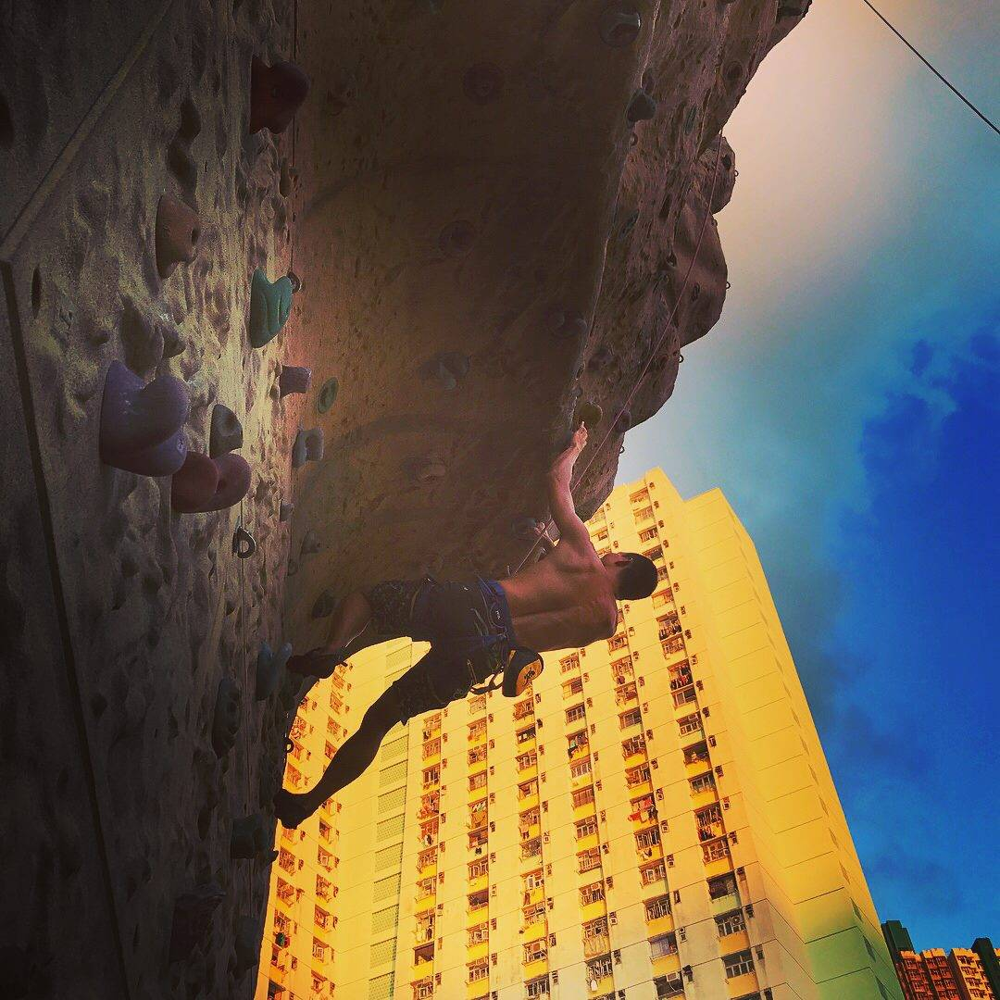

Kevin is a multi-talented Industrial Designer, he received formal training in Product Design, Product Engineering and Marketing. With his competency in both creative design skills and advanced technical knowledge, he helped his clients to develop innovative products by injecting creative insight, stylish design and effective engineering solutions.

Awards
Kevin worked on several award-winning projects, including:
▪ Red Dot Design Award 2016 - FlexiWhisk ,
▪ Red Dot Design Award 2016 - Tongner,
▪ Hong Kong ICT Awards 2014 - mHand H1-B
▪ Hong Kong RFID Awards 2013 - mHand H1-B
▪ Hong Kong ICT Awards 2011 - MegaTray
▪ Hong Kong RFID Awards 2010 - MegaTray
Education
Master of Design, Design Strategies The Hong Kong Polytechnic University ( 2017 )
Bachelor of Engineering (Hons) in Manufacturing Engineering (Product Engineering and Marketing)
The Hong Kong Polytechnic University ( 2002 )
Kevin is a multi-talented Industrial Designer, he received formal training in Product Design, Product Engineering and Marketing. With his competency in both creative design skills and advanced technical knowledge, he helped his clients to develop innovative products by injecting creative insight, stylish design and effective engineering solutions.
Kevin worked on several award-winning projects, including: